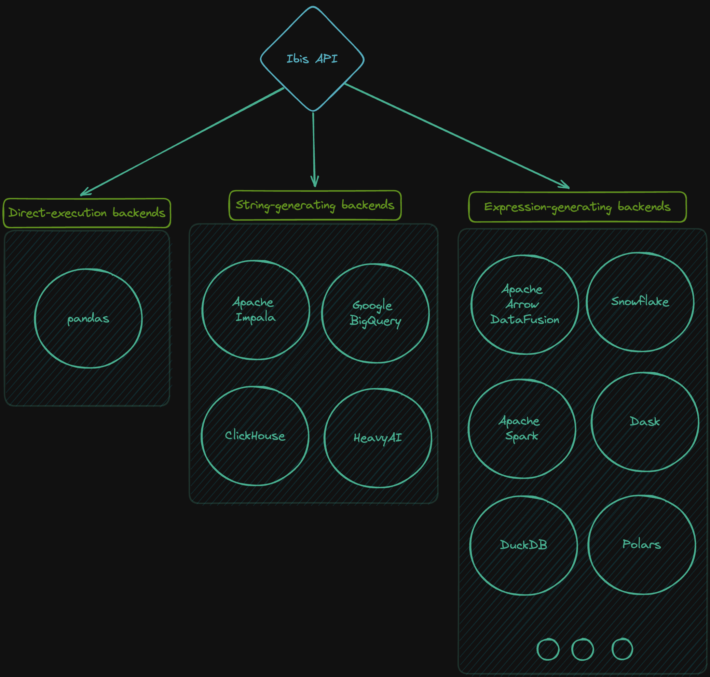

Why Ibis?
Ibis is the portable Python dataframe library.
If you’ve had issues with scaling data transformation code in Python, need to work with data in multiple data platforms, find yourself translating between other Python dataframe APIs, or just want a great Python dataframe experience, Ibis is for you.
Portability
You can reuse the same code across different backends.
Most Python dataframes are tightly coupled to their execution engine. And many databases only support SQL, with no Python API. Ibis solves this problem by providing a common API for data manipulation in Python, and compiling that API into the backend’s native language. This means you can learn a single API and use it across any supported backend (execution engine).

While portability with Ibis isn’t perfect, commonalities across backends and SQL dialects combined with years of engineering effort produce a full-featured and robust framework for data manipulation in Python.
In the long-term, we aim for a standard query plan Intermediate Representation (IR) like Substrait to simplify this further.
Ecosystem
Ibis is part of a larger ecosystem of Python data tools.
It is designed to work well with other tools in this ecosystem, and we continue to make it easier to use Ibis with other tools over time.
Local experience
Out of the box, Ibis offers a great local experience for working with many file formats.
DuckDB is the default backend, with Polars and DataFusion as two other great local options. Many of the backends can run locally but require more setup than a pip installation.
Scaling up and out
After prototyping on a local backend, directly scale in the cloud.
You can prototype on DuckDB and deploy with MotherDuck. You can scale from any Python client with Ibis installed to whatever your backend supports.
Use cases
You can use Ibis at any stage of your data workflow.
Use the same framework for local exploration on a few files or production workloads on the most advanced data platforms.
Ibis helps with:
- data catalog exploration
- exploratory data analysis
- transforming data
- visualizing data
- data science and machine learning
Supported backends
You can install Ibis and a supported backend with pip, conda, mamba, or pixi.
Install with the bigquery extra:
pip install 'ibis-framework[bigquery]'Connect using ibis.bigquery.connect.
Install with the clickhouse extra:
pip install 'ibis-framework[clickhouse]'Connect using ibis.clickhouse.connect.
Install with the datafusion extra:
pip install 'ibis-framework[datafusion]'Connect using ibis.datafusion.connect.
Install with the duckdb extra:
pip install 'ibis-framework[duckdb]'Connect using ibis.duckdb.connect.
Install with the impala extra:
pip install 'ibis-framework[impala]'Connect using ibis.impala.connect.
Install with the oracle extra:
pip install 'ibis-framework[oracle]'Connect using ibis.oracle.connect.
Install with the pandas extra:
pip install 'ibis-framework[pandas]'Connect using ibis.pandas.connect.
Install with the polars extra:
pip install 'ibis-framework[polars]'Connect using ibis.polars.connect.
Install with the postgres extra:
pip install 'ibis-framework[postgres]'Connect using ibis.postgres.connect.
Install with the pyspark extra:
pip install 'ibis-framework[pyspark]'Connect using ibis.pyspark.connect.
Install with the snowflake extra:
pip install 'ibis-framework[snowflake]'Connect using ibis.snowflake.connect.
Install with the sqlite extra:
pip install 'ibis-framework[sqlite]'Connect using ibis.sqlite.connect.
Install the ibis-bigquery package:
conda install -c conda-forge ibis-bigqueryConnect using ibis.bigquery.connect.
Install the ibis-clickhouse package:
conda install -c conda-forge ibis-clickhouseConnect using ibis.clickhouse.connect.
Install the ibis-dask package:
conda install -c conda-forge ibis-daskConnect using ibis.dask.connect.
Install the ibis-datafusion package:
conda install -c conda-forge ibis-datafusionConnect using ibis.datafusion.connect.
Install the ibis-druid package:
conda install -c conda-forge ibis-druidConnect using ibis.druid.connect.
Install the ibis-duckdb package:
conda install -c conda-forge ibis-duckdbConnect using ibis.duckdb.connect.
Install the ibis-impala package:
conda install -c conda-forge ibis-impalaConnect using ibis.impala.connect.
Install the ibis-mssql package:
conda install -c conda-forge ibis-mssqlConnect using ibis.mssql.connect.
Install the ibis-mysql package:
conda install -c conda-forge ibis-mysqlConnect using ibis.mysql.connect.
Install the ibis-oracle package:
conda install -c conda-forge ibis-oracleConnect using ibis.oracle.connect.
Install the ibis-pandas package:
conda install -c conda-forge ibis-pandasConnect using ibis.pandas.connect.
Install the ibis-polars package:
conda install -c conda-forge ibis-polarsConnect using ibis.polars.connect.
Install the ibis-postgres package:
conda install -c conda-forge ibis-postgresConnect using ibis.postgres.connect.
Install the ibis-pyspark package:
conda install -c conda-forge ibis-pysparkConnect using ibis.pyspark.connect.
Install the ibis-snowflake package:
conda install -c conda-forge ibis-snowflakeConnect using ibis.snowflake.connect.
Install the ibis-sqlite package:
conda install -c conda-forge ibis-sqliteConnect using ibis.sqlite.connect.
Install the ibis-trino package:
conda install -c conda-forge ibis-trinoConnect using ibis.trino.connect.
Install the ibis-bigquery package:
mamba install -c conda-forge ibis-bigqueryConnect using ibis.bigquery.connect.
Install the ibis-clickhouse package:
mamba install -c conda-forge ibis-clickhouseConnect using ibis.clickhouse.connect.
Install the ibis-dask package:
mamba install -c conda-forge ibis-daskConnect using ibis.dask.connect.
Install the ibis-datafusion package:
mamba install -c conda-forge ibis-datafusionConnect using ibis.datafusion.connect.
Install the ibis-druid package:
mamba install -c conda-forge ibis-druidConnect using ibis.druid.connect.
Install the ibis-duckdb package:
mamba install -c conda-forge ibis-duckdbConnect using ibis.duckdb.connect.
Install the ibis-impala package:
mamba install -c conda-forge ibis-impalaConnect using ibis.impala.connect.
Install the ibis-mssql package:
mamba install -c conda-forge ibis-mssqlConnect using ibis.mssql.connect.
Install the ibis-mysql package:
mamba install -c conda-forge ibis-mysqlConnect using ibis.mysql.connect.
Install the ibis-oracle package:
mamba install -c conda-forge ibis-oracleConnect using ibis.oracle.connect.
Install the ibis-pandas package:
mamba install -c conda-forge ibis-pandasConnect using ibis.pandas.connect.
Install the ibis-polars package:
mamba install -c conda-forge ibis-polarsConnect using ibis.polars.connect.
Install the ibis-postgres package:
mamba install -c conda-forge ibis-postgresConnect using ibis.postgres.connect.
Install the ibis-pyspark package:
mamba install -c conda-forge ibis-pysparkConnect using ibis.pyspark.connect.
Install the ibis-snowflake package:
mamba install -c conda-forge ibis-snowflakeConnect using ibis.snowflake.connect.
Install the ibis-sqlite package:
mamba install -c conda-forge ibis-sqliteConnect using ibis.sqlite.connect.
Install the ibis-trino package:
mamba install -c conda-forge ibis-trinoConnect using ibis.trino.connect.
See the backend support matrix for details on operations supported. Open a feature request if you’d like to see support for an operation in a given backend. If the backend supports it, we’ll do our best to add it quickly!
Community
Community discussions primarily take place on GitHub.
Getting started
If you’re interested in trying Ibis we recommend the getting started tutorial.